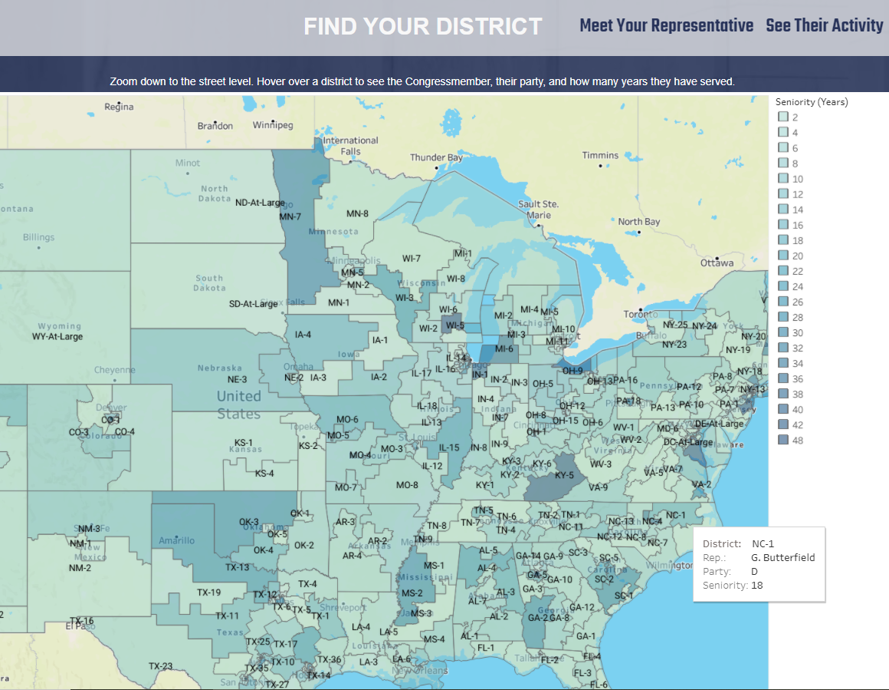
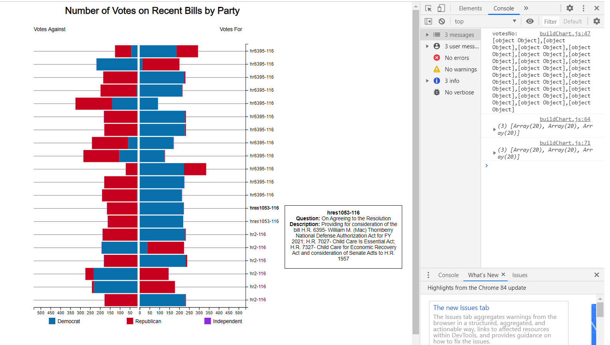

Know Your Congress
Collaborative Flask web application hosted on Heroku. Explore your Congressional
representation
including
photographs, demographic information, social media links, and voting history.
Includes exploratory graphs and a congressional district map. Using ProPublica Congress API,
Python, Mongo Atlas, D3.js, Tableau.
View
Project

D3.js Stacked Diverging Bar Chart
A horizontal stacked diverging bar chart created with d3.js displaying a
party
breakdown of the 20 most recent bills voted on by Congress.
This will ultimately be incorporated into the Know Your Congress project.
View
Repository